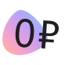
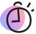
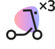
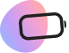
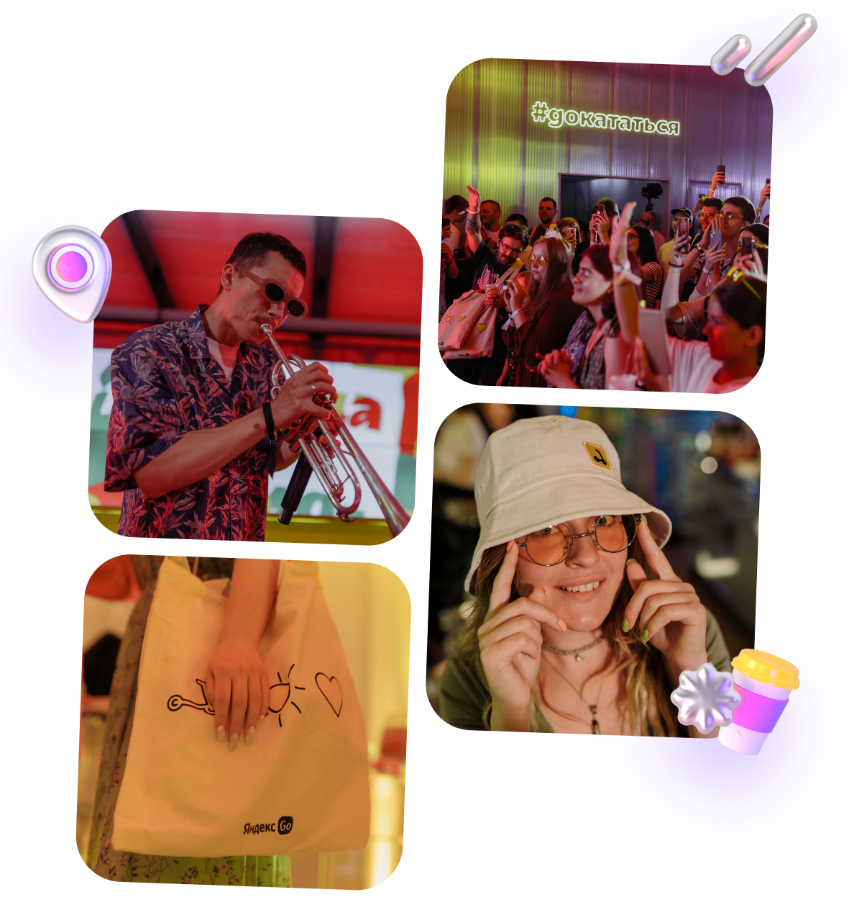
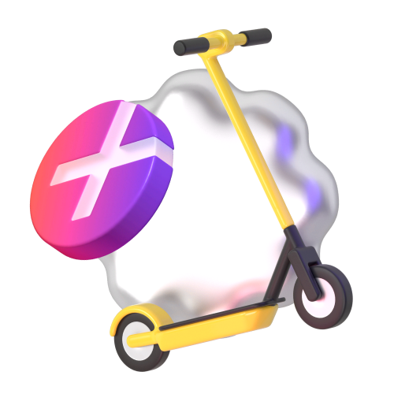
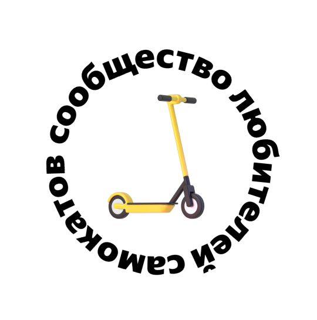

Вот что даёт участие
в клубе

0 ₽ за старт в каждой поездке

Бесплатная пауза 15 минут в поездке — например, чтобы зайти за кофе или передохнуть

Катаетесь с друзьями? Бронируйте до трёх самокатов с аккаунта с абонементом — так у всех
будет бесплатный старт

Если самокат недостаточно заряжен или с ним неудобно переходить дорогу, замените по пути
на другой — это бесплатно
Эксклюзивный доступ
к событиям Самокатов
С абонементом — у вас доступ к специальным мероприятиям, скидки и классный мерч.
В 2023 году мы танцевали на Даче Плюс с Антохой MC, катались на самокатах с Сергеем
Мезенцевым и
слушали хор Attaque de Panique

Купить
абонемент
и вступить
в клуб смогут
те, кто в Плюсе
За каждую поездку на самокатах такие пользователи получают кешбэк баллами.
Баллы можно тратить на поездки на самокатах и такси с Яндекс Go, покупки и заказы в других
сервисах Яндекса


80% наших
пользователей
уже в клубе
и экономят
на поездках
Присоединяйтесь — опция начнёт действовать в начале сезона–2024.
Об открытии сезона предупредим заранее, чтобы вы были готовы